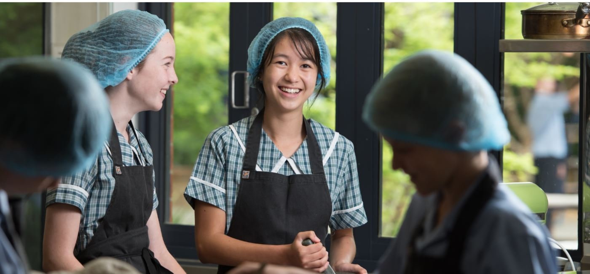
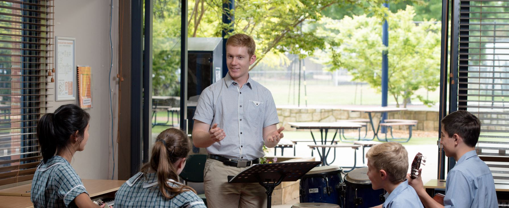

Secondary
 I want to welcome back all our students after the April holidays. I trust that everyone had a fantastic and refreshing break and is ready to take on Term 2 with enthusiasm. It is going to be a busy term with a variety of activities taking place. Some of these include social events, a volleyball tournament, Senior Band performance, exams and some other activities. Parents are encouraged to look at the calendar on the school website to see what is on.
I want to welcome back all our students after the April holidays. I trust that everyone had a fantastic and refreshing break and is ready to take on Term 2 with enthusiasm. It is going to be a busy term with a variety of activities taking place. Some of these include social events, a volleyball tournament, Senior Band performance, exams and some other activities. Parents are encouraged to look at the calendar on the school website to see what is on.
One of the main focus points for staff this term will be on how to use assessment effectively in their teaching. It is a very powerful educational tool if used correctly and can improve your child’s academic performance. This term will be used to consolidate and build on some of the work that was done in Term 1. 
I want to welcome new students to ECS and ask our current students and families to help them settle in quickly.The teachers in Secondary School also need to be thanked for their hard work in Term 1. They are a very committed team that deeply cares for the education of each student in their care. Please keep our students, teachers and the school in your prayers this term as we aim to make more positive progress.
Eugene Roodt
Head of Secondary
Pastoral Care in Secondary School
Emmaus is a small school, deliberately so, and it attempts to work personally to strengthen the community of respect and love between students. It is not always easy as some members of the society give our students some very disappointing examples of attitudes and behaviour, but the School will not shy away from addressing issues as they arise and finding the grounds of respect and tolerance towards difference. This message is often spoken about in devotions on Tuesday mornings when the whole of secondary gathers.

Each student belongs to a Home Room which meets every morning and is arranged by year group. The Home Room teacher is responsible for each of his or her students’ well-being both pastorally and academically, and pays special attention to each individual student.The Home Room share devotions each morning in which a scripture passage is shared, and students and staff pray for and with each other.